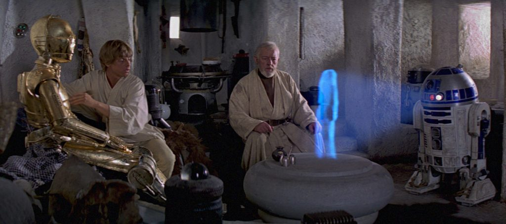
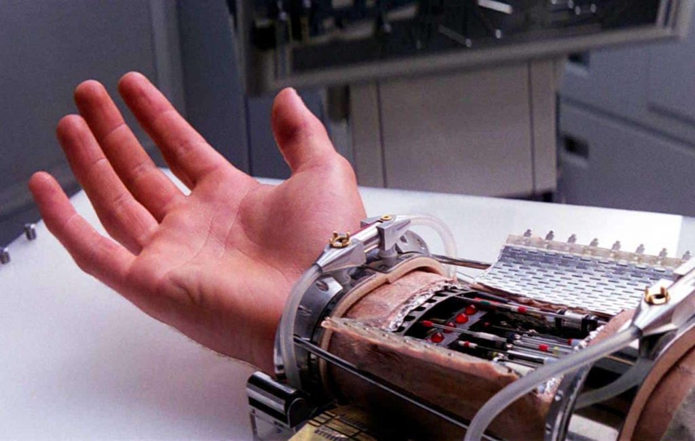
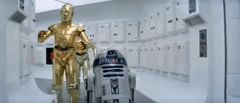

Cinema como Representação Tecnológica
Filmes de ficção científica frequentemente apresentam tecnologias capazes de transformar a sociedade. Essas narrativas funcionam como representações de possibilidades científicas e tecnológicas. No filme Interestelar, lançado em , a exploração espacial e o uso de dados científicos são apresentados como elementos essenciais para a sobrevivência humana.
Outro exemplo, é a franquia Star Wars apresenta diversas tecnologias que influenciaram pesquisas reais, como próteses robóticas, hologramas e robôs autônomos. Embora seja considerada uma fantasia espacial, muitos conceitos tecnológicos da saga serviram como inspiração para inovações científicas.
Entre as tecnologias inspiradas estão próteses controladas por sinais neurais, sistemas holográficos e robôs autônomos, mostrando como o cinema pode antecipar ideias que posteriormente são desenvolvidas pela ciência.
Evolução do Cinema e da Tecnologia
O desenvolvimento de novas ferramentas digitais, efeitos visuais e sistemas computacionais transformou a forma como os filmes são produzidos e consumidos.
A realidade pode ser compreendida como uma construção artificial mediada por sistemas computacionais — Matrix (1999)
Principais Tecnologias Representadas
Áreas Tecnológicas
- Inteligência Artificial
- Redes neurais
- Sistemas autônomos
- Processamento de dados
- Robótica
- Androides
- Drones
- Automação
- Exploração Espacial
- Realidade Virtual
- Computação
Tecnologias Frequentes no Cinema
- Inteligência Artificial
- Análise de Dados
- Exploração Espacial
- Robótica
- Redes Computacionais
Filmes e Tecnologias
| Filme | Ano | Tecnologia | Área |
|---|---|---|---|
| Interestelar | 2014 | Simulação e análise de dados | Computação |
| A Chegada | 2016 | Comunicação e linguagem | Computação |
| Matrix | 1999 | Simulação digital | Computação |
| Her | 2013 | IA conversacional | IA |
| Ex Machina | 2014 | Inteligência Artificial | IA |
| Blade Runner | 1982 | Androides | IA |
| Transcendence | 2014 | Upload de mente | IA |
| O Jogo da Imitação | 2014 | Criptografia | Computação |
| A Rede Social | 2010 | Algoritmos | Dados |
| Ready Player One | 2018 | Realidade virtual | Computação |
| Perdido em Marte | 2015 | Simulação científica | Computação |
| Eu, Robô | 2004 | Robótica | IA |
| Star Wars | 1977 | Robótica e hologramas | Robótica |
Mais informações sobre a relação entre cinema e tecnologia: Cinema e Tecnologia na Era Digital e TI através do Cinema .
Galeria





Glossário
- Inteligência Artificial:
- Sistemas capazes de simular decisões humanas através de algoritmos e dados.
- Robótica:
- Desenvolvimento de máquinas autônomas capazes de executar tarefas automaticamente.
- Algoritmo:
- Sequência lógica de instruções usada para resolver problemas computacionais.
- Big Data:
- Grandes volumes de dados que exigem processamento computacional avançado.